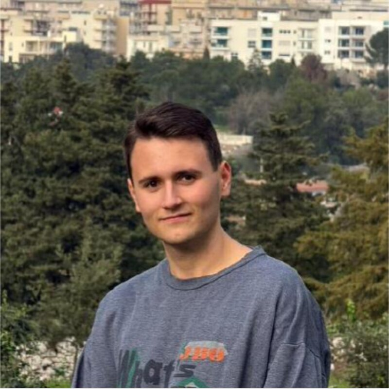

Introduction
My Passion for Technology
Hello everyone! My name is Francesco Vito Giotta, born on August 14, 2006, from Putignano, in the province of Bari, Italy. My passion for computer science and technology has deep roots in my early childhood, driven from the very beginning by a strong curiosity for how software systems and digital architectures operate.